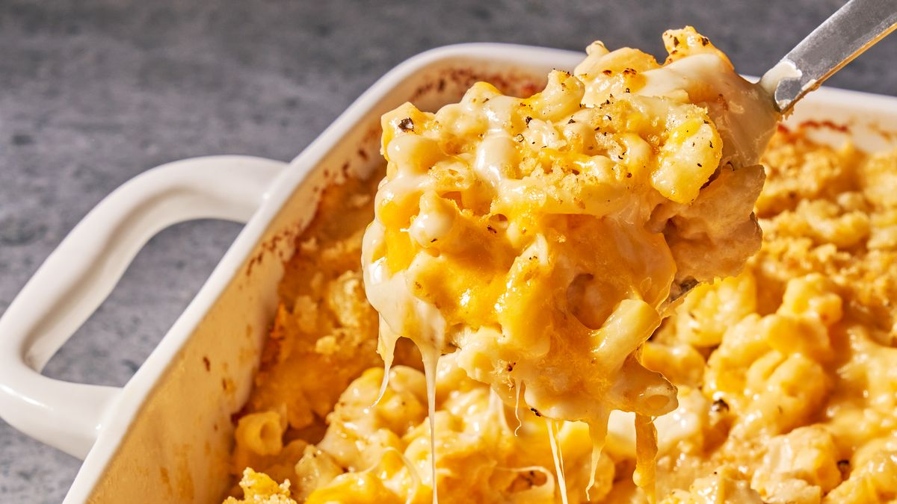

Mac and Cheese

Description
This mac and cheese recipe with a buttered bread crumb topping is creamy and comforting.
It's easy to make the cheese sauce from scratch on your stovetop,
starting with a roux and adding milk, Cheddar, and Parmesan,
resulting in a rich, decadent sauce that coats every nook and cranny of the noodles.
Ingredients
- Macaroni
- Butter
- Flour
- Whole Milk
- Cheese
- Seasonings (Salt, Pepper, Paprika)
- Bread Crumbs
Instructions:
- Boil the noodles, drain, and transfer to a prepared baking dish.
- Make the cheese sauce, pour the sauce over the noodles, and stir.
- Make the topping, spread it over macaroni and cheese, and sprinkle with paprika.
- Bake the mac and cheese until the topping is golden brown
And that's it. Enjoy!